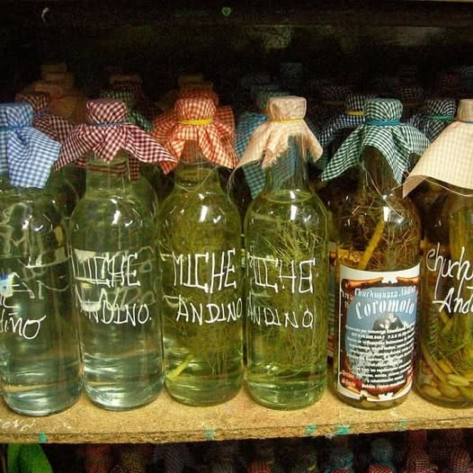

Miche Andino (Claro)

"Bebida espirituosa tradicional de las altas montañas, destilada de manera artesanal y macerada con hierbas aromáticas locales como el hinojo o el frailejón."
⏱️ Tiempo: Meses de maceración🔥 Calorías: 200 kcal📊 Dificultad: Artesanal
🛒 Ingredientes base
👩🍳 Proceso de Maceración
- Selección: Elegir un buen aguardiente destilado de caña, tradicionalmente procesado en los alambiques andinos.
- Mezcla de sabores: En un recipiente de vidrio, añadir las ramas de hinojo, la manzanilla y endulzar ligeramente con papelón y/o miel al gusto.
- Reposo: Tapar herméticamente y dejar reposar en un lugar oscuro y fresco por semanas e incluso meses. Mientras más tiempo, mejor sabor y aroma desarrolla.
- Filtrado: Se filtra para retirar las impurezas y las hierbas antes de consumirlo. Servir a temperatura ambiente para calentar el cuerpo.